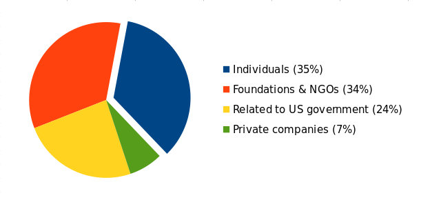

Every day, Tails helps thousands of people to safely use their computers online and offline.
Tails is available for free because we believe that nobody should have to pay to be protected from surveillance and censorship.
Tails is free software because if our source code was closed, there would be no way of verifying that it is secure.
In today's Internet, the most rewarded economical strategy is to rely on advertisement and tracking. But one of our reasons to exist is also to protect you against targeted advertisement, and we obviously don't want to rely on these sources of revenue.
The number of people using Tails is constantly growing and so is our responsibility to provide the easiest and safest tool possible. In 2019, we want Tails to be smoother to install, upgrade, use and to include even more security protection.
Making Tails costs us around 200 000€ each year. This is a really small number given all the work done, and many of us still do a lot of work for free in addition to paid hours.
Our money comes from:
- Passionate people like you
- Private companies like Mozilla, DuckDuckGo, or Lush
- Foundations and NGOs like The Handshake Foundation or The ISC Project
- Funds from the US government like the Open Technology Fund

We often hear complaints about software projects that are meant to fight surveillance, like Tor and Tails, getting funds from the US government. We share this concern and we will never be at ease as long as the well-being of our project depends on such funding.
This is why it's so important to be sustained by users like you, and our independence protected by your donations.
From anonymized statistics, we know that Tails is used more than 20 000 times every day. If each user gave $6, our fundraiser would be done in one day. The price of a USB stick is all we need.
But we know that many of the people who need Tails the most can't donate, because they would get in trouble for giving to an anti-surveillance tool like Tails, or simply because they don't have the money.
Last year we received 1 167 donations for a total of 101 644€. This year, we aim for 120 000€ and a larger number of donors.
Please consider taking a minute to donate to Tails today.